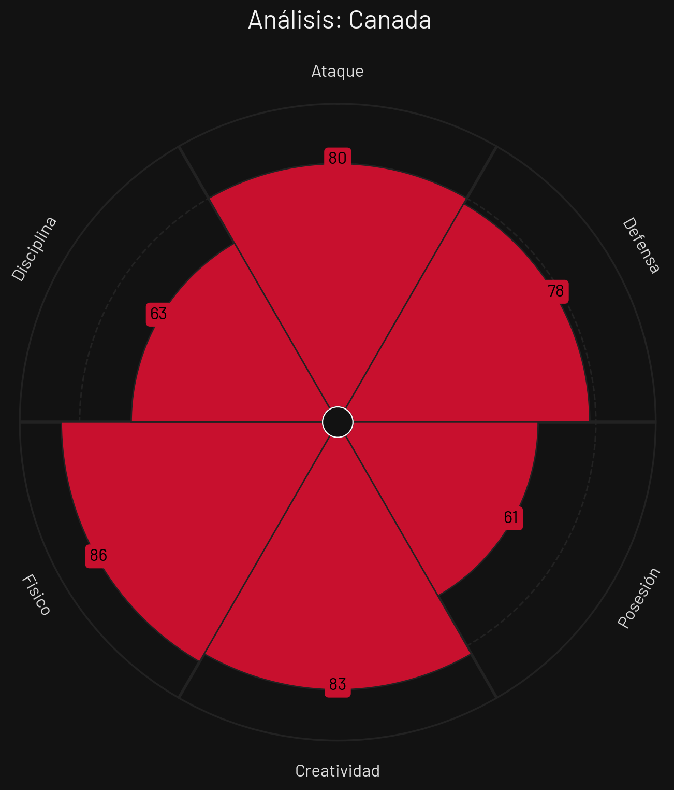
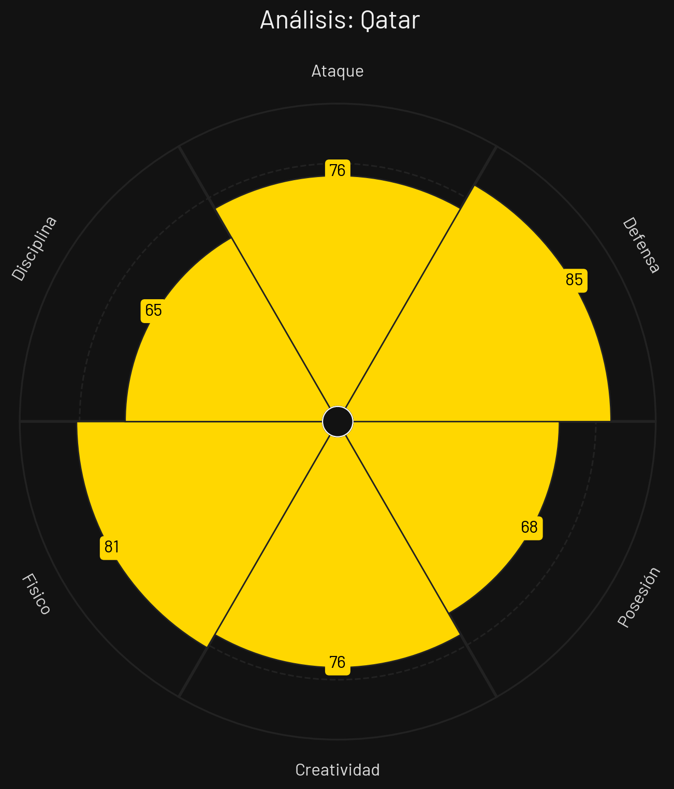

Suiza

Estilo de Juego e Influencia
Organización táctica impecable, salida limpia con tres centrales, pivotes de control y progresión coordinada en zona de gestación.
- Formación Base: 3-4-2-1
- xG Promedio: 1.55 por 90 min
- Zona de Presión: Bloque Medio-Alto (PPDA 9.4)
- Jugador Clave: Granit Xhaka
Canadá

Estilo de Juego e Influencia
Explotación del espacio en transición mediante velocidad de sus carrileros, presión en bloque alto y ataques verticales rápidos.
- Formación Base: 4-4-2 / 4-2-3-1
- xG Promedio: 1.62 por 90 min
- Zona de Presión: Bloque Alto (PPDA 8.8)
- Jugador Clave: Alphonso Davies
Qatar

Estilo de Juego e Influencia
Repliegue defensivo con línea de 5, basculación rápida lateral e intentos de transición combinativa por carril central.
- Formación Base: 5-3-2
- xG Promedio: 1.10 por 90 min
- Zona de Presión: Bloque Bajo (PPDA 12.2)
- Jugador Clave: Akram Afif
Bosnia

Estilo de Juego e Influencia
Juego directo hacia delantero centro pivotante, segundas jugadas agresivas en mediocampo y solidez defensiva posicional estructurada.
- Formación Base: 4-2-3-1
- xG Promedio: 1.15 por 90 min
- Zona de Presión: Bloque Medio-Bajo (PPDA 11.5)
- Jugador Clave: Edin Džeko
Análisis Técnico: Grupo B - Mundial 2026
Basándome en los perfiles tácticos proporcionados, presento un análisis técnico detallado de los equipos del Grupo B:
📊 Comparativa General de Atributos
| Atributo | ||||
|---|---|---|---|---|
| Ataque | 85 | 80 | 76 | 75 |
| Defensa | 86 | 78 | 85 | 71 |
| Posesión | 82 | 61 | 68 | 79 |
| Creatividad | 74 | 83 | 76 | 65 |
| Físico | 70 | 86 | 81 | 87 |
| Disciplina | 69 | 63 | 65 | 55 |
🔍 Análisis por Equipo
SUIZA
Fortalezas
- Organización Táctica (86): Estructura sólida y coordinada.
- Distribución en Mediocampo (84): Manejo del ritmo por Xhaka.
- Salida Limpia (80): Transición limpia desde la base de 3.
Debilidades
- Falta de Pegada Explosiva (72): A veces carecen de gol en partidos cerrados.
Estrategia: Control del juego mediante la posesión en mediocampo, progresión asimétrica y amplitud por carrileros.
CANADÁ
Fortalezas
- Velocidad Extrema (87): Davies y extremos rompen líneas al espacio.
- Presión en Bloque Alto (79): Recuperaciones rápidas en campo rival.
- Motivación Local (82): Apoyo del público en estadios canadienses.
Debilidades
- Estructura Defensiva (73): Tiende a desordenarse si la presión alta es superada.
Estrategia: Presión asfixiante inicial para recuperar arriba y contragolpes inmediatos de máxima intensidad vertical.
QATAR
Fortalezas
- Línea de 5 Compacta (79): Difícil de penetrar por el centro.
- Química Colectiva (77): Años de trabajo con la misma base.
- Creatividad de Afif (76): Capacidad para inventar jugadas aisladas.
Debilidades
- Debilidad en Duelos Físicos (65): Sufre contra el ritmo e intensidad europeos y americanos.
Estrategia: Mantener bloque bajo, frustrar al rival acumulando hombres en área y buscar a Afif para contras rápidas.
BOSNIA
Fortalezas
- Poderío Físico (80): Dominio en duelos terrestres y aéreos.
- Juego Directo Efectivo (75): Džeko retiene y distribuye balones largos.
- Disparos de Media Distancia (72): Peligro desde fuera del área.
Debilidades
- Velocidad de Repliegue (64): Sufre mucho contra extremos veloces al contraataque.
Estrategia: Presionar en bloque medio, forzar el error rival y lanzar pases largos directos al área buscando segundas jugadas.
⚔️ Matchups Clave
🏆 Proyección del Grupo
Clasificación Esperada:
🧠 Análisis Táctico Avanzado
A continuación, se presenta el análisis técnico y cuantitativo del **Grupo B** para el Mundial de Fútbol 2026, evaluando las capacidades tácticas de cada selección a partir de los datos extraídos de sus respectivos perfiles estadísticos.
🔍 Análisis Perfil por Perfil
1. Bosnia
Al examinar el archivo `PerfilTacticoBosnia.png`, la selección bosnia se presenta como un equipo con un fuerte contraste entre su capacidad atlética y su control emocional.
- Fortaleza principal: El despliegue de su apartado físico (87), complementado con una notable fluidez en la distribución y control del balón con un 79 en Posesión. Esto les otorga la capacidad de imponer condiciones en el centro del campo mediante duelos directos.
- Área de mejora: Su bajo índice de disciplina (55). Este factor representa un riesgo crítico en torneos cortos, donde las tarjetas o las faltas innecesarias en zonas de peligro pueden quebrar un planteamiento defensivo que ya de por sí es regular (71).
2. Canadá
Basado en el archivo `PerfilTacticoCanada.png`, la escuadra norteamericana muestra una propuesta altamente dinámica, vertical y propositiva en el frente ofensivo.
- Fortaleza principal: La combinación de una gran inventiva (83 en Creatividad) junto a una ofensiva letal (80 en Ataque) y un soporte atlético envidiable (86 en Físico). Son un equipo capacitado para presionar, romper líneas por velocidad y generar peligro constante.
- Área de mejora: Su elaboración a fuego lento. El registro de 61 en Posesión indica que sufren si se les obliga a adormecer el juego o mantener posesiones largas y horizontales; prefieren transiciones explosivas.
3. Qatar
De acuerdo con el archivo `PerfilTacticoQatar.png`, el conjunto catarí apuesta firmemente por un orden táctico ultradefensivo y un juego sumamente pragmático.
- Fortaleza principal: Una retaguardia sobresaliente (85 en Defensa), combinada con niveles muy equilibrados en su respuesta física (81) y ataque (76). Es un bloque compacto que prioriza mantener el arco en cero antes de tomar riesgos innecesarios.
- Área de mejora: La fluidez de juego bajo presión. Con una posesión de 68 y una disciplina de 65, el equipo puede volverse predecible si el rival logra romper su primera línea de contención o si cae en la frustración táctica.
4. Suiza
El análisis del archivo `PerfilTacticoSuiza.png` revela al equipo teóricamente más fuerte y equilibrado del sector, dominando las métricas clave.
- Fortaleza principal: Un balance de élite entre su línea defensiva (86) y su contundencia en ataque (85), todo esto gestionado a través de un extraordinario control de los ritmos del partido con un 82 en Posesión. Es el equipo más completo estructuralmente.
- Área de mejora: El desgaste físico frente a rivales más intensos. Su métrica más baja se encuentra en el apartado físico (70), lo que podría pasarles factura frente a la intensidad en transiciones de selecciones más atléticas dentro del grupo.
⚡ Dinámica Táctica del Grupo
El Grupo B promete ser una batalla de resistencia y adaptabilidad estratégica debido a la polaridad de sus integrantes: